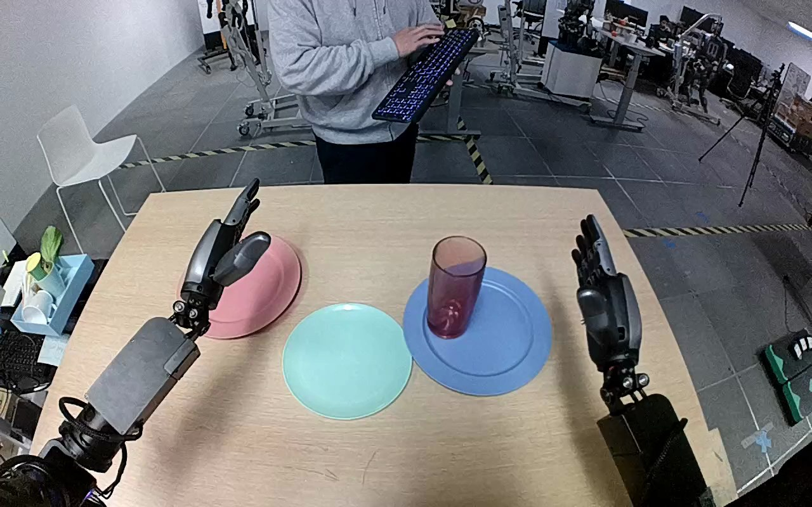

NVIDIA GR1 · 58
Video 58

Visual review action_review.json
{
"prompt_protocol": "humanoid_action_v1",
"prompt_provenance": "visually_authored_from_video_and_initial_frame",
"reviewed_contact_sheets": [
"sheet_001.jpg"
],
"inspected_frame_stride": 2,
"inspected_sampled_frame_count": 60,
"initial_scene": "Robot-mounted forward/downward view with both forearms extending from below. A red translucent cylindrical tumbler stands on the blue plate, with an empty teal plate immediately to its robot-relative left and an empty pink plate farther left. Both hands are open.",
"observed_sequence": [
{
"source_frame_interval": [
0,
12
],
"action": "Both hands are open above the table; the tumbler is upright on the blue plate.",
"confidence": "high"
},
{
"source_frame_interval": [
13,
40
],
"action": "The right arm advances inward toward the tumbler with fingers open; the left hand remains raised over the pink-plate area.",
"confidence": "high"
},
{
"source_frame_interval": [
41,
54
],
"action": "The right thumb and fingers close around opposite sides of the tumbler, establishing a grasp while it remains over the blue plate.",
"confidence": "high"
},
{
"source_frame_interval": [
55,
72
],
"action": "The right hand lifts the grasped tumbler clear of the blue plate, keeping it broadly upright.",
"confidence": "high"
},
{
"source_frame_interval": [
73,
84
],
"action": "The right arm transports the tumbler leftward over the teal plate and begins lowering it.",
"confidence": "high"
},
{
"source_frame_interval": [
85,
106
],
"action": "The right hand lowers and adjusts the tumbler onto the teal plate while retaining its grasp.",
"confidence": "high"
},
{
"source_frame_interval": [
107,
119
],
"action": "The right fingers open away from the tumbler and the hand withdraws to the right; the tumbler remains upright on the teal plate.",
"confidence": "high"
}
],
"arm_hand_roles": {
"right": "Sole manipulating hand: closes around the tumbler, lifts it from the blue plate, carries it leftward, lowers it onto the teal plate, releases it and withdraws.",
"left": "Open hand remains raised on the robot-relative left, near the pink plate, with no object contact or supporting role.",
"coordination": "Single-hand transfer; no hand-to-hand exchange and no active left-hand support. The background person does not touch the task objects."
},
"anatomical_side_evidence": {
"evidence": "The view looks forward along both forearms from the robot. The active forearm enters from the lower-right robot side, with its thumb on the medial/image-left side and its fingers on the lateral/image-right side. The opposite hand has the mirrored medial thumb orientation. This consistent forearm and thumb arrangement establishes active anatomical right and inactive left, rather than relying only on image position.",
"confidence": "high",
"limitation": "Torso and shoulder attachment are outside the camera view; side identification uses the forward-facing paired-arm geometry and thumb orientation."
},
"evidence_frame_indices": [
0,
40,
54,
72,
84,
100,
112,
119
],
"inspection_coverage": {
"sampled_frames": "Every second decoded frame from 0 through 118 inclusive; all 60 cells of sheet_001.jpg visually inspected.",
"native_transitions": "Native source initial PNG and frames 40, 54, 72, 84, 100, 112 and 119 inspected for approach, grasp, lift, transfer, lowering, release and terminal state."
},
"terminal_state": "The tumbler stands upright on the teal plate. The blue plate is empty and the right hand is open and moving away to the right. The left hand remains open and uninvolved.",
"selected_execution_status": "success",
"uncertainties": [
"The translucent tumbler material cannot be determined visually; glass versus plastic is unresolved. Torso/shoulder attachments are outside the frame, but paired forearm orientation and medial thumbs support the anatomical naming."
],
"annotation_discrepancies": [],
"video_id": "58",
"dataset": "NVIDIA_GR1_100",
"dedicated_review_agent": "review_gr1_58",
"review_source_video": "NVIDIA_GR1_100/58/original/original.mp4",
"source_frame_count": 120,
"source_fps": 20.0,
"native_detail_frames": [
0,
40,
54,
72,
84,
100,
112,
119
],
"world_model_prompt": "The robot closes its right hand around the red translucent tumbler on the blue plate, lifts it upright, and carries it leftward to the teal plate. It lowers the tumbler onto the teal plate, opens its fingers to release it, and draws its right hand away, leaving the tumbler upright. Keep the camera fixed; preserve robot geometry, physically valid joint motion, and normal gripper opening and closing.",
"original_task_instruction": "Use the right hand to pick up red glass from blue plate to teal plate.",
"selected_segment": {
"start_frame": 0,
"end_frame_exclusive": 120,
"reason": "Complete original single-task reference; no cropping or trimming requested."
},
"source_video_sha256": "0bcadc0b3f9afaf032ef515235dfeeecdc6e3b9b241f530660509869126f3af8",
"review_completed_at": "2026-10-13T18:15:48.660270+00:00"
}